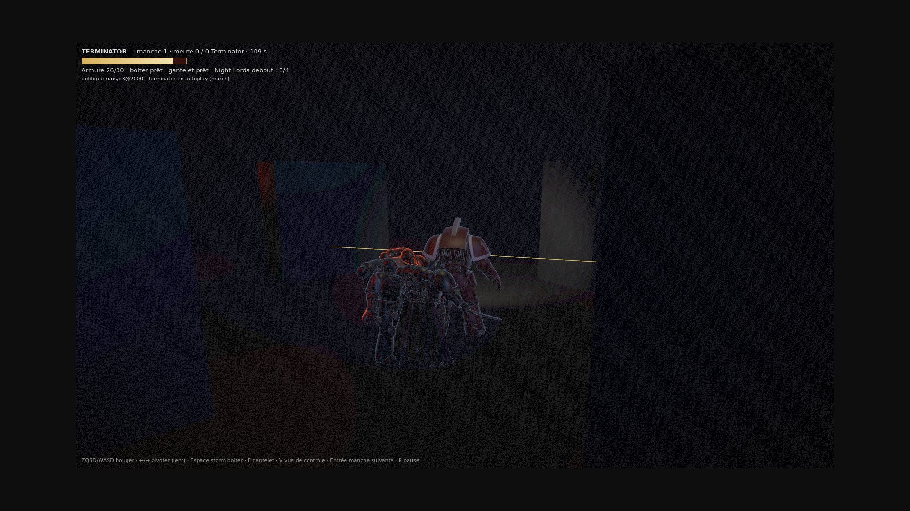
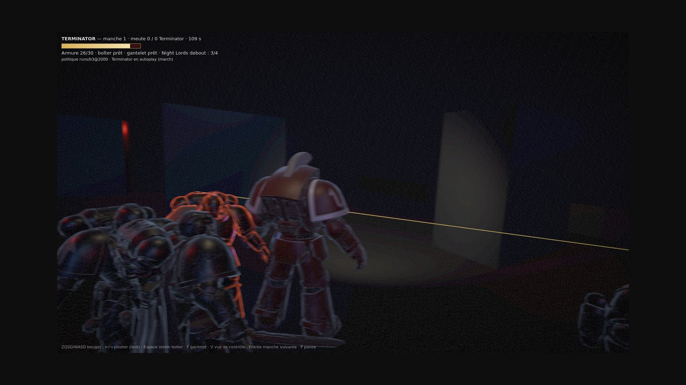
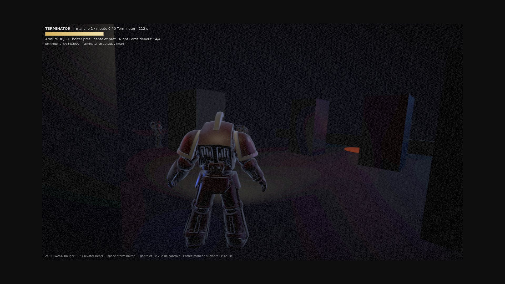
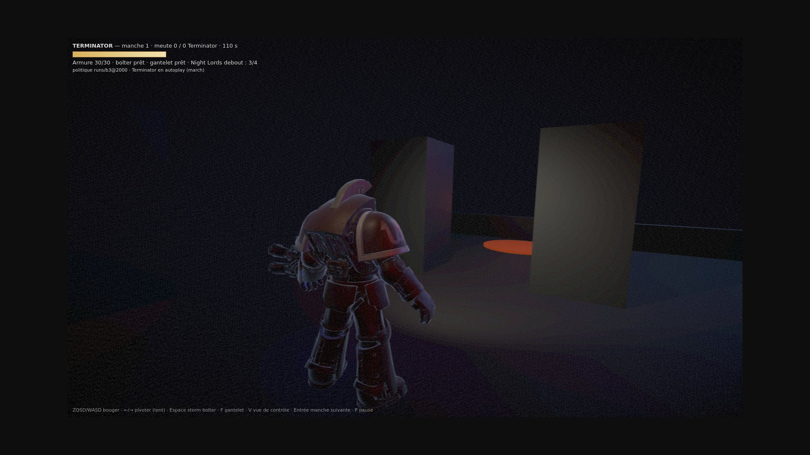
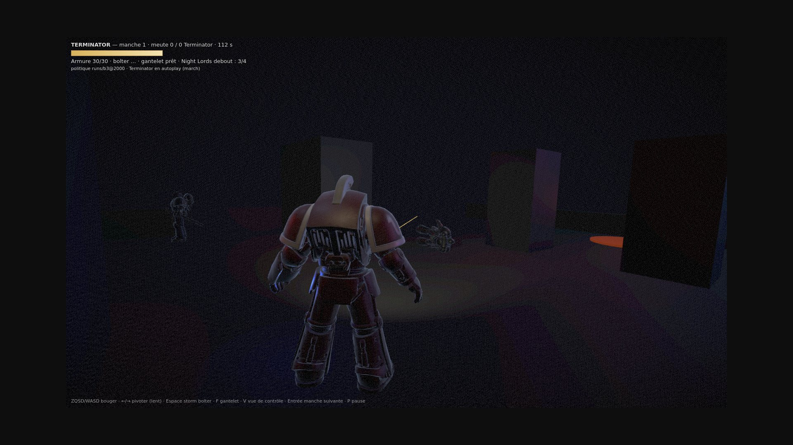
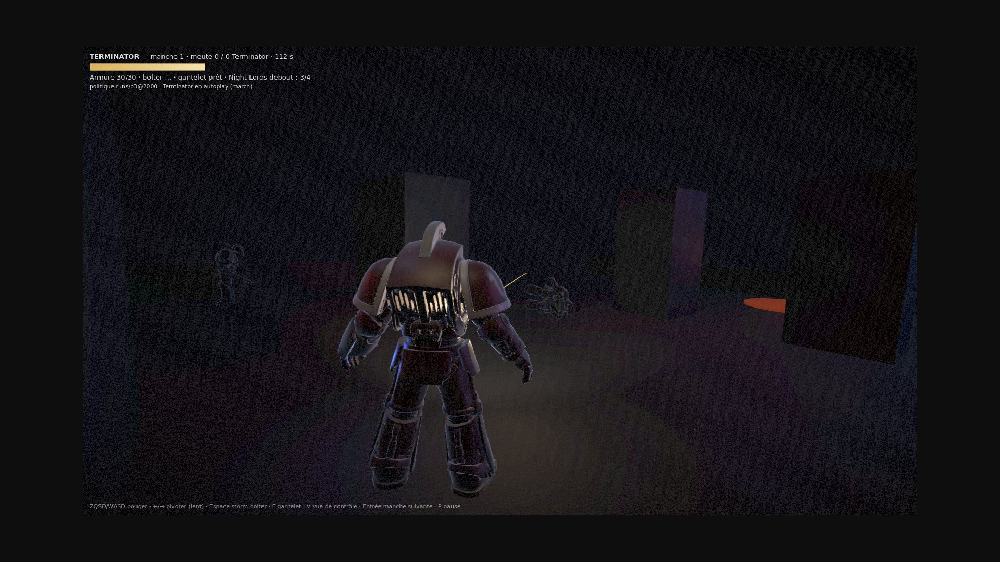

Graine 3, ?autoplay=march, 10 ticks = 1 s, 1600×900. Aucune retouche. ?cam=couloir rend la caméra de P1, ?impact=0 coupe le poids.

Avant — caméra de couloir (P1), t115 8,2 m derrière, 3,4 m du sol. On regarde la scène de loin : le Terminator est une silhouette, la meute un groupe.

Après — à l'épaule, t115 3,55 m derrière, 1,15 m sur son épaule droite, 2,5 m du sol. Même tick, même graine : on ne voit plus qu'eux.

t77 — marche Il occupe le cadre, l'épaule droite passe devant l'objectif. Un appui tous les 1,55 m.

t100 — approche Le bolter est prêt, trois Night Lords encore debout. Le halo bleu du gantelet pulse à 3,1 rad/s.

t82 — la rafale part, caméra stable ?impact=0 : ni recul, ni flash. C'est la référence de la paire suivante.

t82 — la rafale part, à l'épaule 76 mm de recul, 1,09° de nez qui monte. Flash de bouche : 12 sur 11 m pendant 75 ms — le sol devant monte de +10,8/255, le pilier central de +36.
Ce que le poids coûte en stabilité 115 ticks, graine 3, caméra relevée à chaque tick, ?impact=0 en référence.
à l'épaule
impact = 0
course verticale
83 mm
56 mm
écart-type de la hauteur
21,7 mm
19,6 mm
appui du pas
25,1 mm = 0,40° = 5,8 px
0
recul de la rafale
76,3 mm vers l'arrière
0
nez
1,09° vers le haut
0
roulis en virage
2,81°
2,81°
rotation maximale
10,4°/tick
10,4°/tick
Le roulis ne vient pas du poids : il suit le lacet, identique dans les deux colonnes. La respiration (5,2 s, ±28 mm) est dans les deux. Budget : aucun draw call et aucun triangle de plus, deux lumières ponctuelles, une branche de 5 prises dans la passe plein écran quand le lacet tourne.